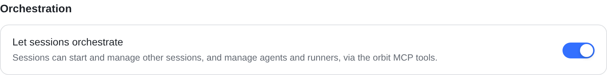
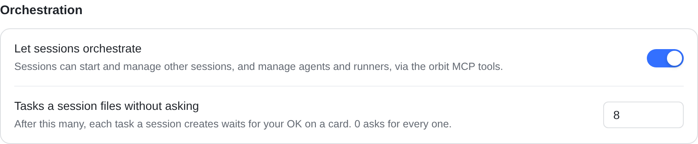

cardFreeTaskCreates（默认 8，0–50）。这块板只画 Web 设置页上的一行：在哪里、怎么写、怎么改。
截图均为真实控制台（today 与 proto 两次构建，同一套 fixtures）。
数量写死在服务端（目前生效的是 7，分支上已改为默认 8），设置页看不到，也改不了。

放在 “Let sessions orchestrate” 下面：两行都在回答“智能体不问你能做什么”。右侧是数字框（0–50，整数），改完即存，和本页其它行一样没有保存按钮。

第 13 个起，每次建任务都弹确认卡。改动只影响之后的建任务请求，已经弹出的卡不变。
0 = 每个 task_create / task_create_batch 都要你确认（即这次改动之前的行为）。
session-create-allowance.ts）| 情况 | 结果 |
|---|---|
| 该会话已建任务数 + 本次条数 ≤ 设置值 | 卡片自动通过，不打扰你 |
| 会超过设置值的那一次，及之后每一次 | 照常弹卡等你确认 |
| 一次批量就超过设置值（如设置 8，批量 9 条） | 整批弹卡 |
| 会话的权限模式比账号默认更窄（如 Plan） | 总是弹卡 |
| 计数 | 该会话建过的所有任务，包括你手动批准的 |
| 未设置 / 存储值非法 | 按 8 处理 |
src/web/src/pages/settings/GeneralPage.tsx | Orchestration 里加一行 + 说明文案 |
src/web/src/pages/settings/settingsIndex.ts | 标题与一行描述（设置搜索也读这里） |
src/web/src/lib/queries.ts | UserPreferences 加 cardFreeTaskCreates |
GeneralPage.test.tsx | 默认显示 8、改值发 PATCH、0 可存 |